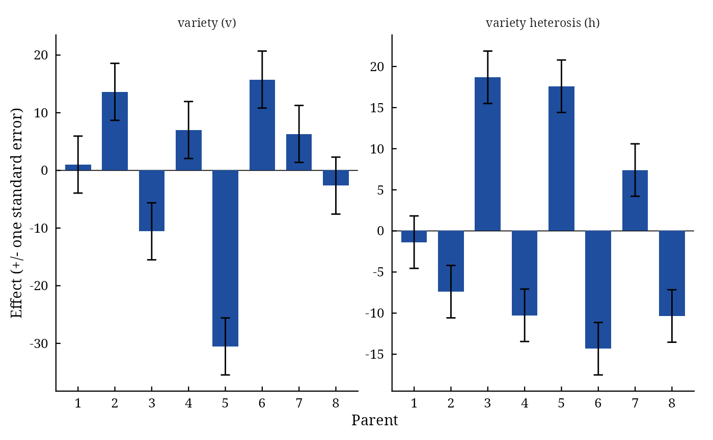

Gardner and Eberhart's Analyses II and III of a diallel with parents
Source:R/GardnerEberhart.R
GardnerEberhart.RdGardnerEberhart() analyses parents and one set of \(F_1\) crosses (Griffing's Method 2 design) with
the genetic models of Gardner and Eberhart (1966): Analysis II splits the entries into variety effects and
heterosis (average, variety and specific heterosis); Analysis III into variety effects, average heterosis and the
general and specific combining ability of the crosses.
Arguments
- y
response: a column of
datagiven by name (y = Yieldory = "Yield") or a numeric vector of lengthnrow(data).- Rep
replicate (block): a column of
dataor a vector, as fory.- Cross1
female parent of each plot: a column of
dataor a vector, as fory.- Cross2
male parent of each plot: a column of
dataor a vector, as fory.- data
a data frame (or
data.table) with one row per plot.- Analysis
2(Analysis II, default) or3(Analysis III).- Model
1(fixed effects, default) or2(random effects; changes only the tests).
Value
An object of class c("da_gardner", "da_result", "list"):
Meansmatrix of entry means (parents on the diagonal, crosses above it).
ANOVAanalysis of variance of the entries (class
anova).Effectsdata.tableof the effects of each parent with standard errors: Analysis IIvandh; Analysis IIIvandg.Averagedata frame: \(\hat{\mu}_v\) and \(\hat{\bar{h}}\) with standard errors.
Specificsymmetric matrix of the specific effects \(\hat{s}_{jj'}\).
RCBDanalysis of variance of the plot data.
Methods: print(), summary(), plot() (which = c("effects", "specific", "residuals",
"qq")), data.table::as.data.table(x, component =), da_export.
Details
Let \(\bar{y}_{jj}\) be the mean of parent (variety) \(j\) and \(\bar{y}_{jj'}\) that of the cross \(j \times j'\), \(j < j'\), with \(P\) parents.
Analysis II. $$\bar{y}_{jj} = \mu_v + v_j, \qquad \bar{y}_{jj'} = \mu_v + \frac{v_j + v_{j'}}{2} + \bar{h} + h_j + h_{j'} + s_{jj'},$$ with \(\sum_j v_j = \sum_j h_j = 0\) and \(\sum_{j' \neq j} s_{jj'} = 0\). The entries' sum of squares (\(P(P + 1)/2 - 1\) degrees of freedom) is split sequentially into varieties (\(P - 1\)) and heterosis, the latter into average heterosis (1), variety heterosis (\(P - 1\)) and specific heterosis (\(P(P - 3)/2\)).
Analysis III. $$\bar{y}_{jj} = \mu_v + v_j, \qquad \bar{y}_{jj'} = \mu_v + \bar{h} + g_j + g_{j'} + s_{jj'},$$ with \(\sum_j g_j = 0\): varieties (\(P - 1\)), varieties against crosses (average heterosis, 1), general combining ability of the crosses (\(P - 1\)) and specific combining ability (\(P(P - 3)/2\)); the last two are Griffing's Method 4 analysis of the crosses.
The sums of squares are on the scale of entry means; the error is \(MS_E/B\) on the error degrees of
freedom of the block analysis (least-squares entry means and the harmonic mean of the plot numbers when plots are
missing). With Model = 1 every line is tested against the error; with Model = 2 the variety and
heterosis lines (Analysis II) or the gca line (Analysis III) are tested against the specific line. Standard errors
of the effects come from the least-squares fit, \(\mathrm{Var}(\hat{\boldsymbol{\beta}}) =
(\mathbf{X}^{\top}\mathbf{X})^{-1}MS_E/B\).
References
Gardner, C. O. and Eberhart, S. A. (1966). Analysis and interpretation of the variety cross diallel and related populations. Biometrics, 22(3), 439–452. doi:10.2307/2528181
Murray, L. W., Ray, I. M., Dong, H. and Segovia-Lerma, A. (2003). Clarification and reevaluation of population-based diallel analyses: Gardner and Eberhart Analyses II and III revisited. Crop Science, 43(6), 1930–1937. doi:10.2135/cropsci2003.1930
See also
Other DiallelAnalysisR analyses:
Griffing(),
GriffingEnv(),
GriffingMeans(),
Hayman(),
Heterosis(),
LineTester(),
NCDesign(),
PartialDiallel()
Author
Muhammad Yaseen (myaseen208@gmail.com)
Examples
#-------------------------------------------------------------
## Analysis II: varieties and heterosis
#-------------------------------------------------------------
ge2 <-
GardnerEberhart(
y = Yield
, Rep = Rep
, Cross1 = Cross1
, Cross2 = Cross2
, data = GriffingData2
, Analysis = 2
, Model = 1
)
ge2
#> Gardner and Eberhart's Analysis II, Model 1; 8 parents, 4 replicates
#>
#> Analysis of variance (entry means)
#> Df Sum Sq Mean Sq F value Pr(>F)
#> Varieties 7 1851 264.4 9.47 4.55e-09 ***
#> Heterosis 28 12529 447.5 16.03 < 2e-16 ***
#> Average heterosis 1 374 373.8 13.39 0.000398 ***
#> Variety heterosis 7 2851 407.2 14.59 3.81e-13 ***
#> Specific heterosis 20 9305 465.2 16.66 < 2e-16 ***
#> Error 105 2932 27.9
#> ---
#> Signif. codes: 0 ‘***’ 0.001 ‘**’ 0.01 ‘*’ 0.05 ‘.’ 0.1 ‘ ’ 1
#>
#> Estimate Std. Error t value Pr(>|t|)
#> mu_v 84.633 1.868 45.302 9.626e-71
#> hbar 7.751 2.118 3.659 3.980e-04
#>
#> Effects of the parents
#> Parent v SE_v h SE_h
#> <char> <num> <num> <num> <num>
#> 1: 1 1.012 4.943 -1.365 3.191
#> 2: 2 13.627 4.943 -7.388 3.191
#> 3: 3 -10.563 4.943 18.687 3.191
#> 4: 4 7.007 4.943 -10.261 3.191
#> 5: 5 -30.531 4.943 17.600 3.191
#> 6: 6 15.757 4.943 -14.328 3.191
#> 7: 7 6.327 4.943 7.403 3.191
#> 8: 8 -2.633 4.943 -10.347 3.191
ge2$Effects
#> Parent v SE_v h SE_h
#> <char> <num> <num> <num> <num>
#> 1: 1 1.011562 4.942814 -1.365469 3.190573
#> 2: 2 13.626563 4.942814 -7.388385 3.190573
#> 3: 3 -10.563438 4.942814 18.686615 3.190573
#> 4: 4 7.006563 4.942814 -10.260885 3.190573
#> 5: 5 -30.530938 4.942814 17.599531 3.190573
#> 6: 6 15.756562 4.942814 -14.327552 3.190573
#> 7: 7 6.326563 4.942814 7.402865 3.190573
#> 8: 8 -2.633437 4.942814 -10.346719 3.190573
plot(x = ge2, which = c("effects", "specific", "residuals", "qq")[1])

#-------------------------------------------------------------
## Analysis III: varieties, average heterosis, gca and sca
#-------------------------------------------------------------
ge3 <-
GardnerEberhart(
y = Yield
, Rep = Rep
, Cross1 = Cross1
, Cross2 = Cross2
, data = GriffingData2
, Analysis = 3
, Model = 1
)
ge3$ANOVA
#> Df Sum Sq Mean Sq F value Pr(>F)
#> Varieties 7 1574.8 224.96 8.057 8.099e-08 ***
#> Average heterosis 1 373.8 373.81 13.388 0.000398 ***
#> gca 7 3126.9 446.70 15.998 3.672e-14 ***
#> sca 20 9304.6 465.23 16.662 < 2.2e-16 ***
#> Error 105 2931.8 27.92
#> ---
#> Signif. codes: 0 ‘***’ 0.001 ‘**’ 0.01 ‘*’ 0.05 ‘.’ 0.1 ‘ ’ 1